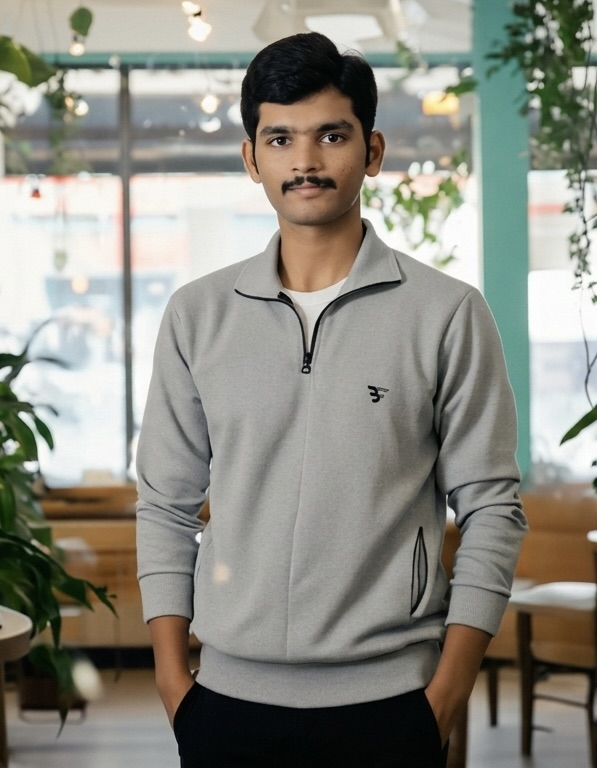
Sai Dheeraj Gummadi
Specialized in Applied AI, LLM Systems, Document Parsing & Financial Data Automations
Architecting intelligent ML pipelines, RAG systems, and quantitative models. Master's in Economics (Andhra University) & Master's in Data Science (IU Germany). 8 Research Publications in IEEE/Springer & 1 Granted US Patent.
 LinkedIn
LinkedIn
 GitHub
GitHub
 Tech Blog
Tech Blog
> career_trajectory.log
Work Experience & Academic DegreesSoftware Engineer-3 (AI/ML Engineer)
- Working with Fundamental Financial Data including complex balance sheet and financial statement extractions.
- Integrating AI Automations into high-throughput financial data extraction systems and building a real-time context store to validate AI model predictions.
Master's in Economics
Deep focus on econometric modeling, quantitative analysis, macroeconomic indicators, and financial market dynamics.
Software Engineer-I (AI/ML Engineer)
- Engineered Data Governance Framework with FinOps team: constructed cost forecasting and anomaly detection models across multi-cloud infrastructure for spend and earnings insights.
- Built automated weekly mass email pipeline serving project owners with financial dashboards comparing spend trends, saving analysis, and proactive budget alerts.
- Designed RAG-based Chatbot for Public Safety using ChatGPT-4o-mini and AlloyDB Vector DB; deployed as a resilient RESTful API on Kubernetes with <3s average latency.
- Developed IRD Document Parser leveraging Gemini-1.5-Flash with self-consistency prompting, deployed on K8s; cut document processing time from 2 weeks to 2 days with 70%+ automation rate.
Master's in Data Science
Thesis: "AI Stock Analyst: Financial Chatbot Using Large Language Models" advised by Dr. Tobias Broweleit. Researched investment banking workflows, RAG system design, benchmarking Gemini 1.5 Flash vs. GPT-4o with Trustworthiness Score evaluation metrics. [View Thesis Certificate]
Deep Learning Engineer
- Designed natural language NLP pipeline for Low-Code/No-Code platform translating natural language specifications into complete system architectures.
- Synthesized workflow datasets across ChatGPT, LLaMA-2, and Mistral; trained T5/BART/GPT models for coreference resolution, sentence splitting, and span extraction.
- Applied knowledge distillation for lightweight LLMs and deployed models via Docker and Ray Serve.
- Fine-tuned GPT-2 (1.5B parameters) with LoRA & BitsAndBytes across multi-GPU Tesla V100s for real-time virtual developer assistant.
- Optimized vLLM Inference Engine yielding ultra-low latency (0.06s) and high throughput (71 rps). Prototyped LlamaIndex RAG pipelines for hallucination reduction.
Data Scientist
- Built end-to-end Financial DocumentScanner combining CNN, YOLO, and OCR to extract financial statement tables (100–200 pages) for credit risk assessment, achieving 80% automation rate and 40% manual time reduction.
- Trained 6-layer CNN model using Explainable AI (LIME & GradCAM) for interpretability.
- Enhanced Generic Parser latency using quantized LayoutLM token classification transformer models, reaching 90% accuracy and 75% automation.
- Developed page-type classification (Sales Invoice, Remittance, Check, Claim) by fine-tuning LayoutLM Sequence Classifier on content and visual layout.
- Constructed XGBoost & Random Forest payment date prediction models for Fortune 500 CPG clients, achieving 85% accuracy within +/-3 days.
B.Tech in Electronics & Communication Engineering
Published 8 research papers on deep learning and medical computer vision in IEEE, Springer, and Scopus databases. Patented a machine learning pipeline under Professor Anirban Ghosh.
> research_papers_&_patents.bib
8 Papers • 1 Granted US Patent • Google Scholar"Machine Learning based Systems and Methods for Data Extraction from Financial Statements"
Enhancing Credit Decisions with AI: A Pipeline for Automated Financial Document Analysis and Creditworthiness Prediction
Impact of Deepfakes and Gradient Centralization on COVID-19 Diagnosis: A Compact Swin Transformer based Approach
Ocular Disease Classification: A Vision Transformer based Approach
Deep Residual Learning based Discriminator for Identifying Deepfakes with Cut-Out Regularization
Transfer Learning based Classification of Plasmodium Falciparum Parasitic Blood Smear Images
Transfer Learning based Detection of Pneumonia from Chest X-Ray Images
Image Enhancement based on Verilog Hardware Description Language Images
Computer Vision Based Sudoku Solving with Augmented Reality
> published_books.json
Available on Amazon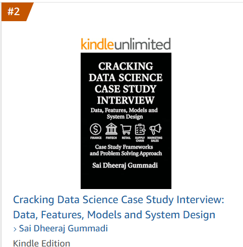
Cracking Data Science Case Study Interview
The Complete Hands-On Language Models Playbook
> keynotes_&_talks.sh
Invited Guest Keynotes> open_source_projects.git
Interactive Repository ShowcaseComputer Vision Attendance System
Facial recognition based automated system with real-time tracking.
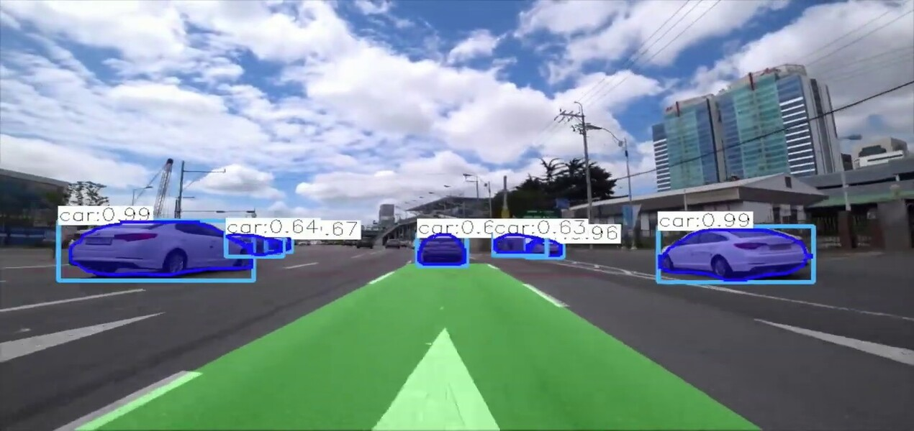
Autonomous Car Vision
Real-time object perception and navigation for self-driving vehicles.
General Chatbot with Python
Artificial neural network conversational model built from scratch.
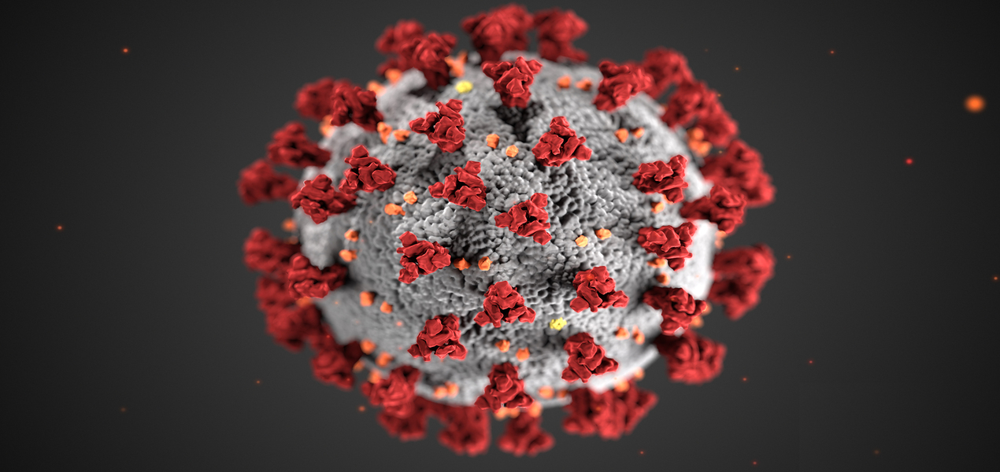
Covid Detection with Medical Images
Deep transfer learning model for chest X-ray disease detection.
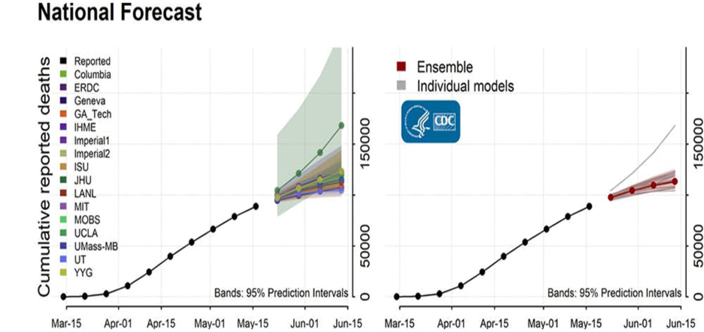
Covid-19 Forecasting via Regression
Time-series epidemiological statistical forecasting models.
Credit Card Fraud Detection
Imbalanced classification and anomaly detection models for finance.
Face Recognition with HaarCascades
OpenCV feature-based cascade classifiers for facial detection.
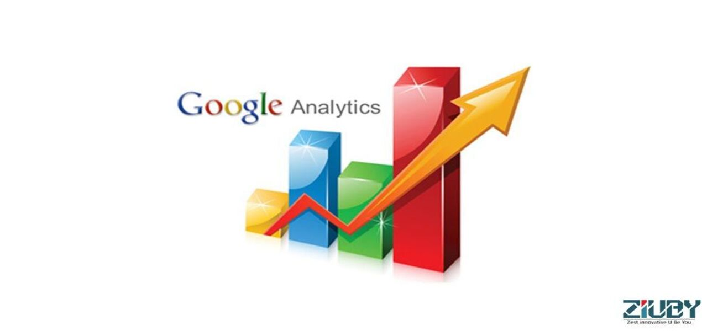
Google Analytics Revenue Prediction
Kaggle customer transaction revenue prediction pipeline.
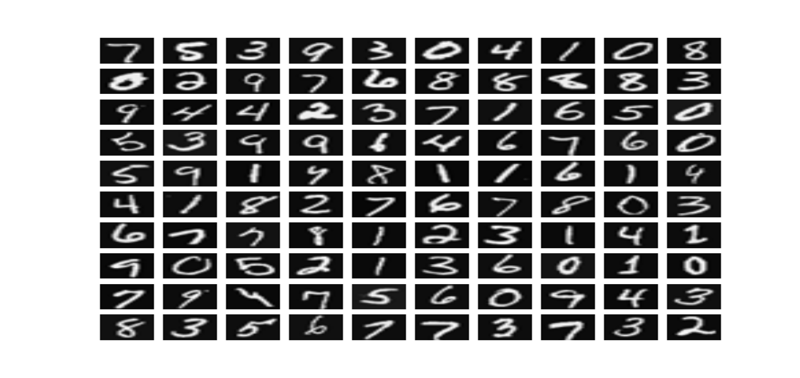
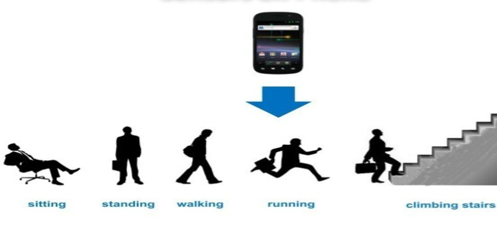
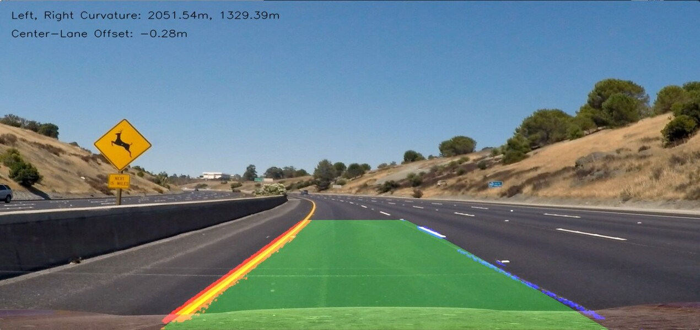
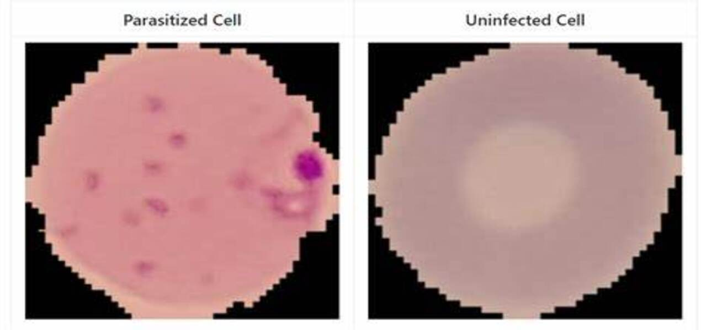
End to End Malaria Detection
Parasitic blood cell classification model deployed end-to-end.
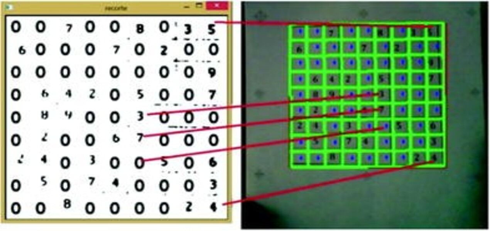
AR Sudoku Solver
Real-time camera augmented reality grid projection and backtrack solver.
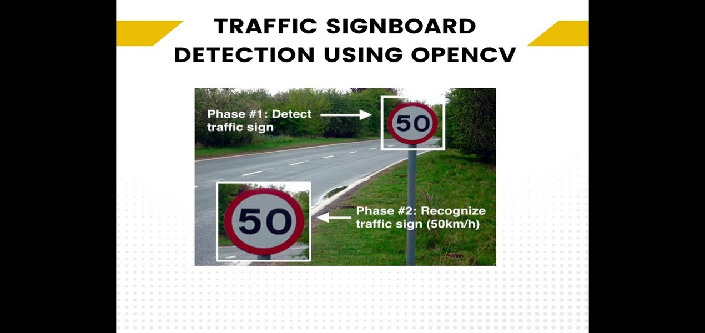
Realtime Traffic Signs Recognition
Convolutional classifier for German Traffic Sign Recognition Benchmark.
> verified_certifications.key
Stanford, IBM, DeepLearning.AI & HackerRank
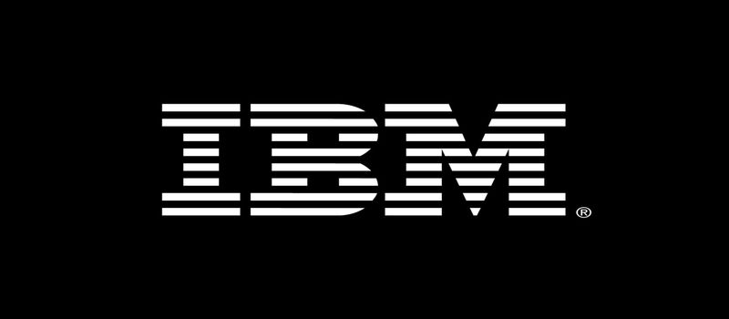
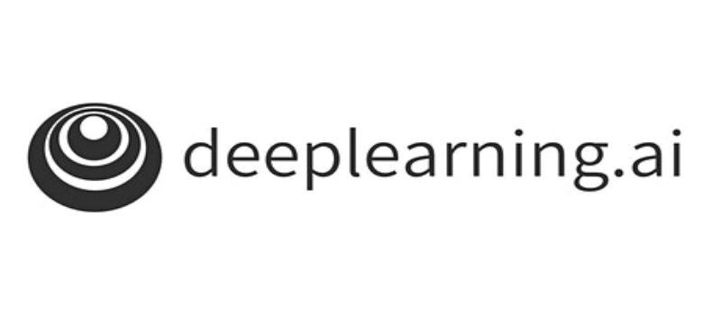